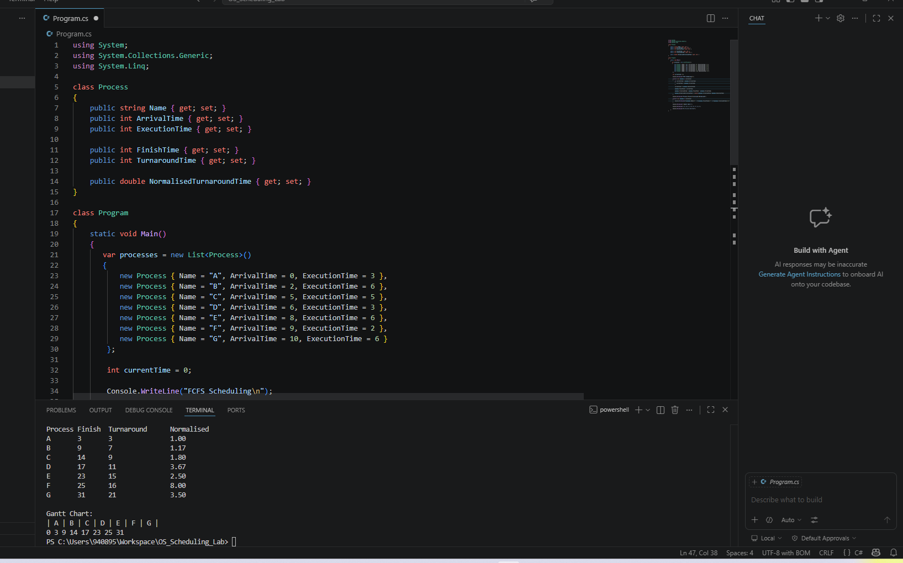
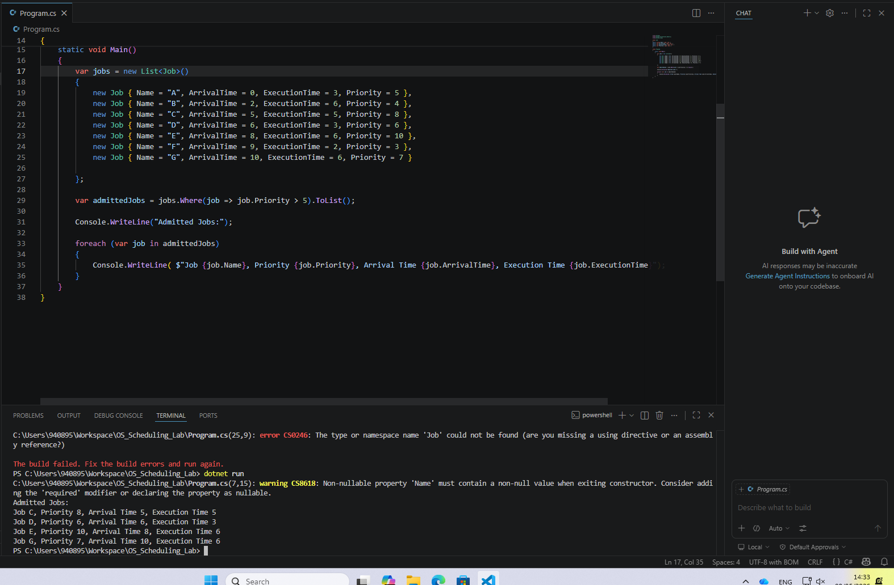
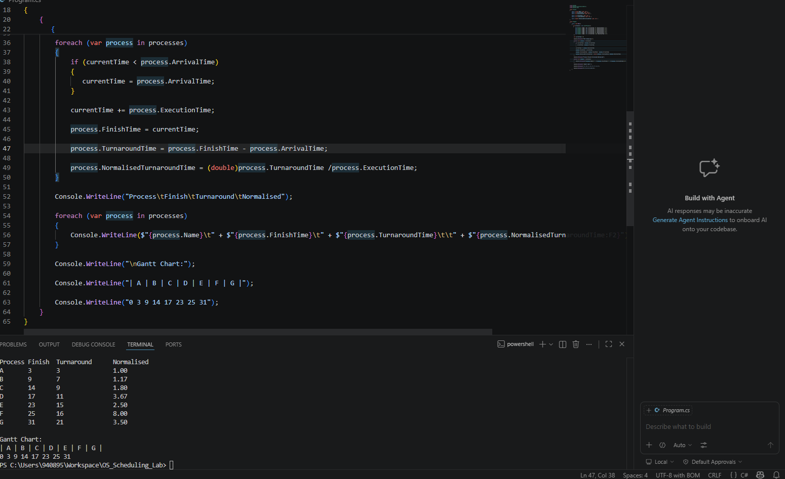
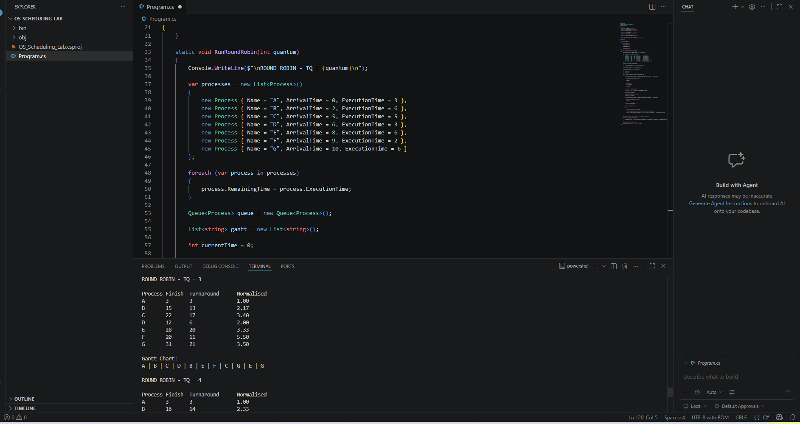
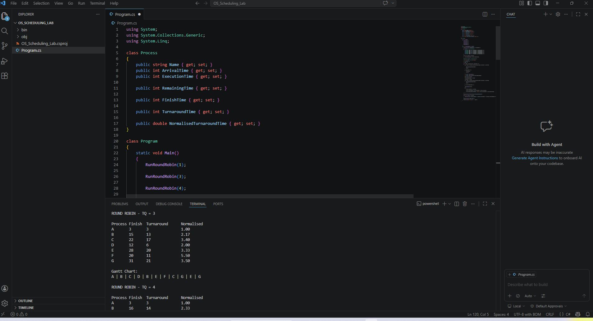
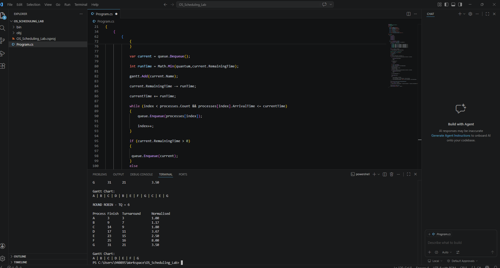

OS Scheduling Lab
Implementing and comparing CPU scheduling algorithms — Long-Term Scheduling, FCFS, Round-Robin, and Priority-Based Round-Robin — using C#.
Section 1 — Long-Term Scheduling
I wrote a C# program that filters jobs based on priority into ready queues, allowing only high-priority jobs to be admitted. This simulates how an OS long-term scheduler controls which processes are loaded into memory.


Section 2 — FCFS (First-Come, First-Served)
I implemented the First-Come, First-Served scheduling algorithm in C#:
- Created a Process class to hold the metrics of each process.
- Sorted processes by arrival time and iterated through them in order.
- Calculated finish time, turnaround time, and normalised turnaround time.
- Printed a Gantt chart showing execution order and time points.
Notable Result
Process F had a normalised turnaround time of 8.


Section 3 — Round-Robin Scheduling
I implemented Round-Robin scheduling with four time quantum values: TQ = 1, TQ = 3, TQ = 4, and TQ = 6. Each process has a remaining time field that decreases by the time quantum each run. When it reaches zero the process finishes; otherwise it re-joins the queue.
Key Observation
As the TQ value increases, the average turnaround time increases and approaches the FCFS value — a very large time quantum makes Round-Robin behave like FCFS.


Section 4 — Priority-Based Round-Robin
I extended the Round-Robin simulation to include priority-based scheduling. The ready queue is sorted by priority so higher-priority processes run first. I tested TQ = 1 and TQ = 6.


Language: C#
Key takeaway: Increasing TQ moves Round-Robin performance closer to FCFS. Priority ordering ensures critical processes are always serviced first.